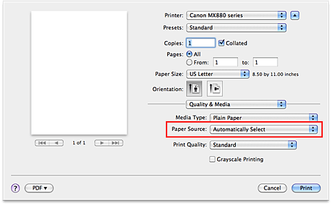

The procedure for setting paper source is as follows:
-
Select Quality & Media from the pop-up menu of the Print Dialog
-
Select the paper source
For Paper Source, select the item below that matches your purpose.
- Automatically Select
-
Plain paper whose Paper Size is US Letter, A5, A4, or B5 JIS (JB5) is fed from the cassette. Other sizes of plain paper and paper types other than plain paper are fed from the rear tray.
- Rear Tray
-
Paper is always fed from the rear tray.
- Cassette
-
Paper is always fed from the cassette.
 Important
Important
-
Plain paper that is not US Letter, A5, A4, or B5 JIS (JB5) and paper types other than plain paper cannot be fed from the cassette.
-
- Continuous Autofeed
-
When plain paper runs out in the specified paper source, the printer automatically switches the paper source.
When printing a large volume of data, load plain paper of the same size in both the rear tray and the cassette. The printer then automatically switches the paper source when paper runs out in one paper source, thus reducing the work of reloading paper.
Important
-
Continuous Autofeed is unavailable when paper other than Plain Paper is selected for Media Type.
-
Since the printer feeds paper from the paper source that was being used the last time Continuous Autofeed was selected and printing ended, load the same paper in both the rear tray and the cassette.
-
- Paper Allocation
-
When the media type for the print data is plain paper and the paper size matches the paper allocation setting, the printer automatically feeds paper from the cassette. If not, the printer feeds paper from the rear tray.
To change the paper allocation settings, display the pop-up menu of Canon IJ Printer Utility, select Paper Allocation from the menu, and then specify the new settings.
When you load frequently used plain paper in the cassette, the printer feeds other types of paper from the rear tray, thus reducing the work of reloading paper.
-
Complete the setup
Click Print.
When you execute print, the printer uses the specified paper source to print the data.